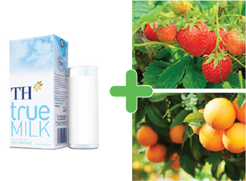
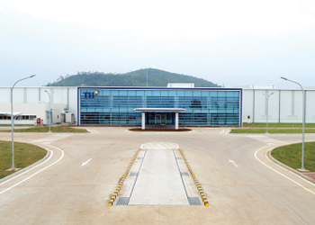
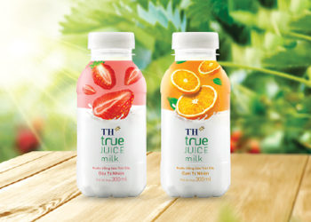
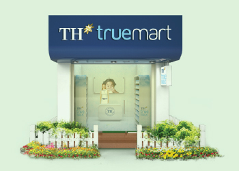

QUY TRÌNH SẢN XUẤT SỮA TRÁI CÂY
TH true JUICE milk
Sản xuất tại nhà máy Núi Tiên (*), trên dây chuyền hiện đại từ CHLB Đức
Nguyên liệu hoàn toàn tự nhiên
Từ sữa tươi sạch của trang trại TH kết hợp với nước ép
trái cây nhập khẩu từ các vùng nguyên liệu chất lượng cao.

Nghiên cứu, phối trộn sản phẩm
Các nguyên liệu được phối trộn với công thức
riêng biệt, mang đến vị ngon và nguồn dưỡng
chất hoàn toàn từ thiên nhiên.
Công nghệ tiệt trùng hiện đại
Công nghệ tiệt trùng hiện đại với dây chuyền sản xuất khép kín từ CHLB Đức giúp lưu giữ nhiều nhất dưỡng chất và hương vị cho sản phẩm.

Sản phẩm thơm ngon tiện dụng
Hương vị sản phẩm hài hòa.
Bao bì tiện lợi, trẻ trung.
Thiết kế cổ chai rộng cho trải nghiệm uống sảng khoái

Tiếp thị và phân phối
Sản phẩm được phân phối rộng khắp tại các cửa hàng, siêu thị trên toàn quốc.
